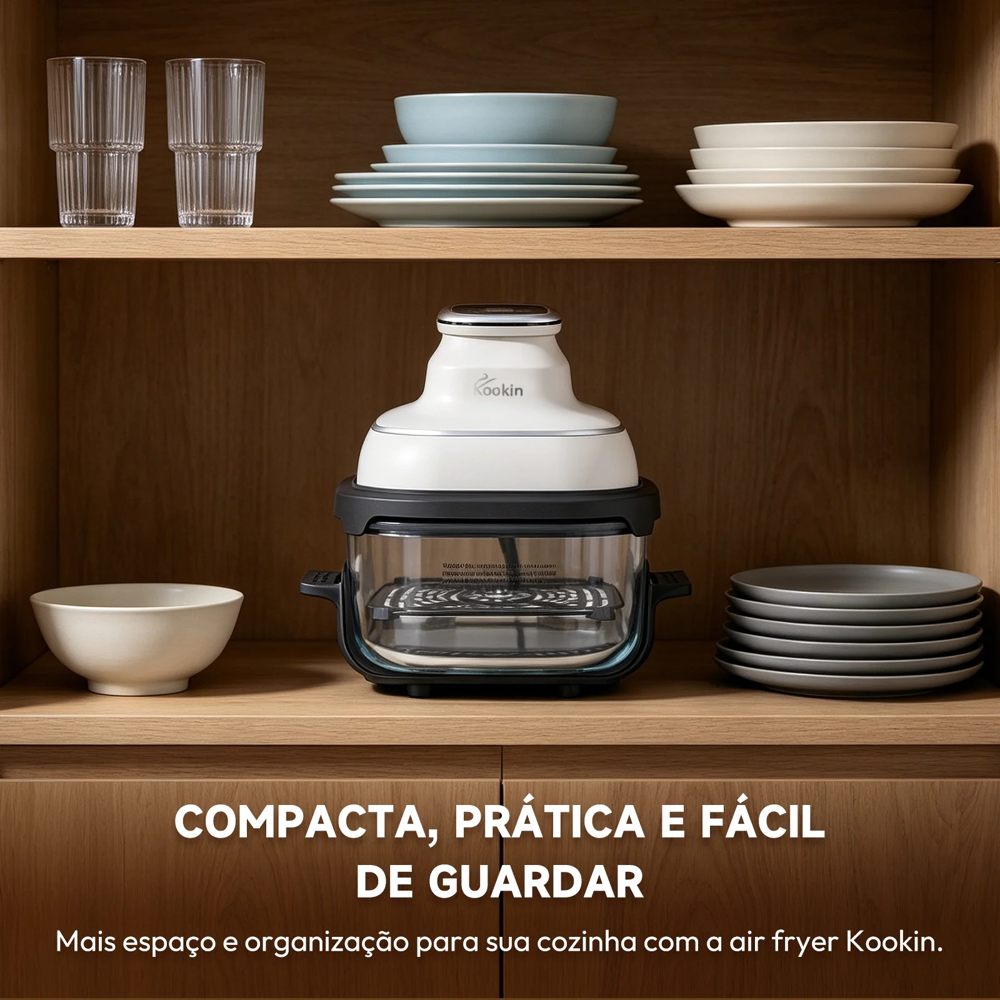
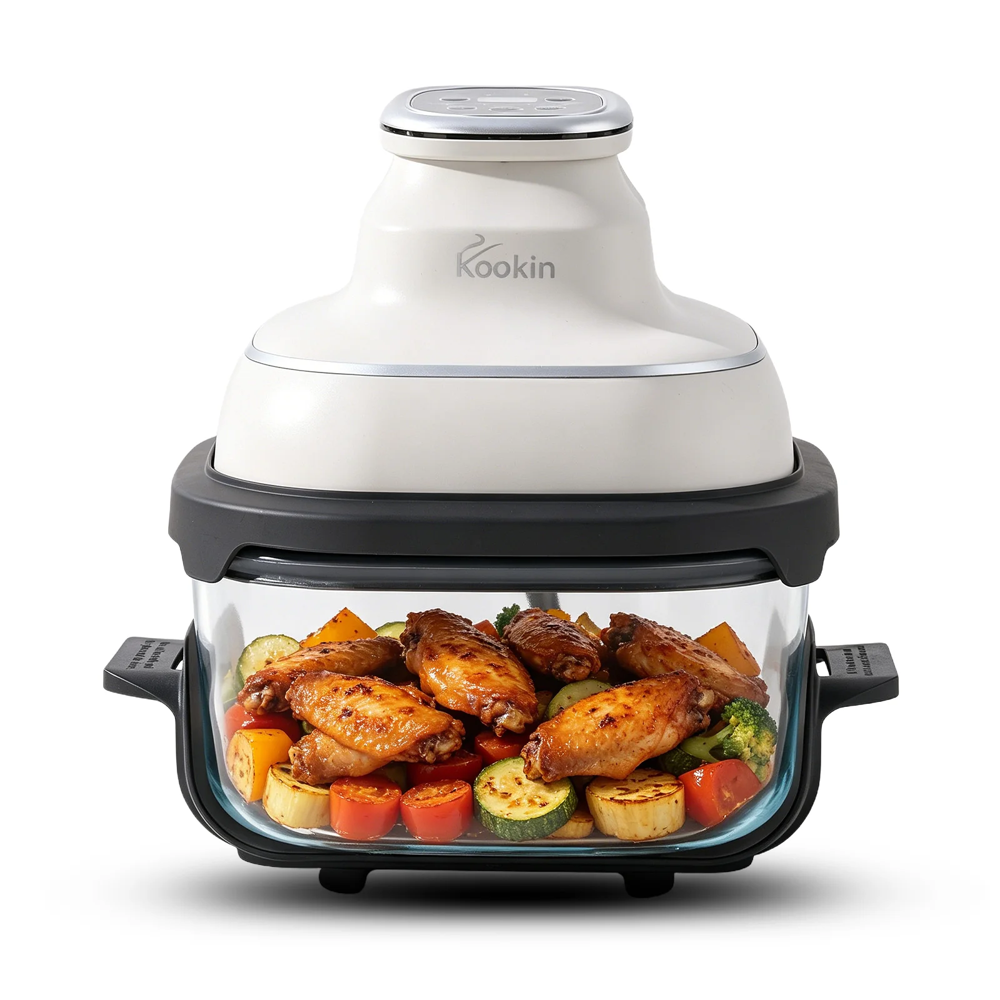

Forma e função
Desenhada para ficar à vista.
O módulo branco concentra os controles. O vidro traz leveza visual e deixa o preparo participar da cozinha.
Air Fryer de vidro
Precisão que você acompanha. Materiais que você sente. Limpeza que cabe na vida real.
Conheça por dentroForma e função
O módulo branco concentra os controles. O vidro traz leveza visual e deixa o preparo participar da cozinha.
Você acompanha cor, textura e ponto sem abrir o recipiente e sem interromper o fluxo de calor.
Engenharia legível
Controle superior, cuba de vidro, grelha interna e base de apoio trabalham em sequência, com encaixe claro e desmontagem intuitiva.
O recipiente removível simplifica servir, guardar e limpar. Menos etapas entre a receita e o tempo livre.
Explorar a linhaMateriais honestos

Transparente, removível e direto para a limpeza.
Grelha firme para elevar o alimento e distribuir o calor.
Comandos concentrados em uma peça superior compacta.

Do preparo ao prato
Frango, legumes e receitas do dia a dia ganham calor uniforme com menos bagunça na bancada.
Descobrir Kookin